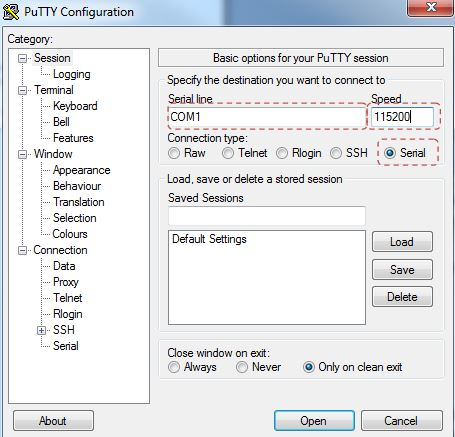

So I sat down the other night to finally start playing with my Intel Edison board and quickly found out that the documentation for this thing really sucks. There are forums and pages and PDFs spread all over the Intel site and most of the content centers around using the Arduino breakout board. For those of us using the mini breakout board we are left to our own resourcefulness to get this thing up and running. There is even incorrect info in the Quickstart that might leave beginners scratching their heads. If Intel wants this thing to get widespread community adoption it needs to spend significantly more time making the first experience a better one.
Until then, here is my version of how to get started with the Edison mini breakout board. This is the guide I wish I had for my first experience.
So Intel nailed the unboxing part. The Edison comes in a sweet box and opening it evokes a few oooohs and aaahs. That’s about where it ends though. They have a getting started url right under the box lid which makes you think that they are really going to help you through the process but unfortunately you’re mostly on your own at this point. The link has only partially relevant instructions to the mini breakout and even some of the relevant stuff has errors.
STOP: Installing a header is completely optional but if you intend to connect your Edison to external hardware at some point I recommend you solder one on now. You can always do it later but the tiny 70 pin Hirose connector makes me nervous so I’d rather not stress it with unnecessary insertions and removals.
If you intend to connect any external hardware to your Edison you’re going to need access to the GPIO pins. These are located under the Edison itself on the breakout board.
You can individually solder wires to this but I personally recommend breaking all of the pins out to a header for easy connection. This is really easy to do even for a beginner so don’t be afraid. The pins are standard 0.1” spaced so any generic male header strip will do. Break the header strip into 14 pin segments and install them side by side on a breadboard as seen below. Make sure the long end of the header strip pins is in the breadboard so the short side is pointing up.
This will be your jig for soldering. Place the breakout board onto the pins so that the USB connectors are on top. Solding the headers in upside down will definitely ruin your day. The breakout should sit on the pins and feel nice and level. If installed correctly the header pins will just barely protrude from the holes. This ensures that they won’t interfere with seating the Edison later on. If the pins stick out too far then you’ve got your header installed upside down on the breadboard.
For soldering I highly recommend using a flux pen. It will help the solder flow into the joints. Take your time soldering and make sure you get a good solder flow on each joint and be careful not to over-apply solder as it will ball up on the pin and not create a good joint. Here is what mine looked like when I was done. You can see that there are a few joints that aren’t as nice as the others but we should be okay. I used some rubbing alcohol and a clean t-shirt rag to clean the flux up after soldering.
Because of the mounting holes it’s pretty much impossible to install the Edison the wrong way on the breakout board. Just be careful seating it as the 70 pin connector has very tiny contacts that can be damaged if you’re not careful. Get the Edison nice and level over the connector and push straight down on it right about where the sticker is below the metal housing. You should hear a good sounding click.
Install the two nuts provided to hold the Edison in place.
The Quickstart guide provided by Intel has you install the Arduino IDE next. Now even though this isn’t the Arduino breakout you can still write sketches and run them. You just have to break out the appropriate pins yourself. I’m not interested in Arduino functionality so I opted to skip that part but if you want you can install that now.
The driver installation step from the Quickstart is one of the few items they nailed in the guide and you can follow the instructions there. Basically you’re downloading and installing two sets of drivers: one for the FTDI interface and one for the Edison itself. Here are the links for both. Just click through the installations.
For your computer to talk to the Edison at first you will need to use a serial connection. This is acheived over USB with the FTDI drivers which essentially speak USB to the FTDI chip on your breakout board and then the FTDI chip translates USB to serial for the Edison to understand. A terminal emulator is the program that runs on your PC that manages that connection. The most popular one is PuTTY but you can use any terminal emulator you feel comfortable with.
This one stumped me a little at first. There are two USB ports on the mini breakout and I assumed one was for power and communication and the other was for connecting devices to the Edison so it could act as a USB host. You probably didn’t assume that but if you did you would be wrong…just like me. One of the USB ports is for communicating with your PC via the terminal emulator and the other is one of the ways you can power the Edison. As found in this thread there are actually 3 different ways to power your Edison via the breakout board.
Once you’ve decided on a power strategy for your Edison it’s time to power it up and play with it. By default your Edison comes with Yocto Linux installed but you’ll need to configure it.
Set the following options for communication

Click Open
When Edison goes into low power sleep, the UART internal FIFO and interface is powered down. Therefore, a two-wire UART (Rx/Tx) will lose the first received character whenever Edison is in sleep mode.
Basically if you don’t type anything for about 20 seconds or so the next time you press a key in the terminal it will wake up the Edison but not register your key. You’ll have to hit it again. It’s very annoying and I will post info on how to disable sleep mode as soon as I figure it out
Follow the prompts through the configuration. If the Edison doesn’t locate any WiFi networks at first just press 0 to have it rescan. Mine didn’t find any the first time around for some reason.
Once you’ve finished configuring your Edison you can essentially treat it like a Linux machine. I was surprised to find that it had NodeJS and NPM installed and was able to get an Express website up and running within a couple of minutes.
A few things of note:
If you have any problems or questions feel free to reach out on Twitter. I’m always happy to help if I can.